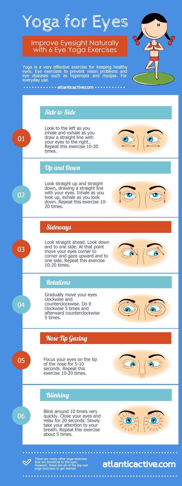

How to Exercise Your Eyes: 9 Steps (with Pictures) - wikiHow
2020.12.07 12:35
MESSAGES LOG IN
Log in
Facebook Google wikiHow Account No account yet? Create an account EXPLORE Random Article Categories Arts and Entertainment Cars & Other Vehicles Computers and Electronics Education and Communications Family Life Finance and Business Food and Entertaining Health Hobbies and Crafts Holidays and Traditions Home and Garden Personal Care and Style Pets and Animals Philosophy and Religion Relationships Sports and Fitness Travel Work World Youth About Us HELP US Community Dashboard Write an Article Request a New Article More Ideas... Home Random Browse Articles About wikiHow Easy Ways to Help Approve Questions Review Tech Feedback Fix Spelling Quiz App More Things to Try... Log in / Sign up Terms of Use We use cookies to make wikiHow great. By using our site, you agree to our cookie policy . Cookie Settings Okay ✖ wikiHow is where trusted research and expert knowledge come together. Learn why people trust wikiHow Categories Health Eye Health Eye ExercisesHow to Exercise Your Eyes
Explore this Article parts 1 Preparing Your Eyes for Exercise 2 Exercising Your Eyes Exercises and Tips to Maintain Your Eyesight Other Sections Questions & Answers Video Tips and Warnings Related Articles References Article Summary Medically reviewed by Theodore Leng, MDLast Updated: June 14, 2020 References Approved
X This article was medically reviewed by Theodore Leng, MD . Dr. Leng is a board certified Ophthalmologist and Vitreoretinal Surgeon and an Assistant Professor of Ophthalmology at Stanford University. He completed his MD and Vitreoretinal Surgical Fellowship at Stanford University in 2010. Dr. Leng is a Fellow of the American Academy of Ophthalmology and the American College of Surgeons. He is also a member of the Association for Research in Vision and Ophthalmology, the Retina Society, the Macula Society, the Vit-Buckle Society, as well as the American Society of Retina Specialists. He received the Honor Award by the American Society of Retina Specialists in 2019.
There are 12 references cited in this article, which can be found at the bottom of the page.
wikiHow marks an article as reader-approved once it receives enough positive feedback. This article received 15 testimonials and 85% of readers who voted found it helpful, earning it our reader-approved status.
This article has been viewed 2,897,663 times.
We all know how important it is to keep our bodies fit by keeping active and maintaining a regular exercise routine. But, did you know that you can exercise your eyes as well? Eye exercises are designed to strengthen your eye muscles, improve focusing, eye movements, and stimulate the vision center of your brain. While there is no scientific proof that eye exercises will improve your eyesight, they may help to counteract existing eye problems you may have and maintain your current eyesight level. [1] X Research source
Steps
Part 1 of 2: Preparing Your Eyes for Exercise
{"smallUrl":"https:\/\/www.wikihow.com\/images\/thumb\/4\/43\/Exercise-Your-Eyes-Step-1-Version-4.jpg\/v4-460px-Exercise-Your-Eyes-Step-1-Version-4.jpg","bigUrl":"\/images\/thumb\/4\/43\/Exercise-Your-Eyes-Step-1-Version-4.jpg\/aid4251-v4-728px-Exercise-Your-Eyes-Step-1-Version-4.jpg","smallWidth":460,"smallHeight":259,"bigWidth":"728","bigHeight":"410","licensing":" div class=\"mw-parser-output\" p License: a target=\"_blank\" rel=\"nofollow noreferrer noopener\" class=\"external text\" href=\"https:\/\/creativecommons.org\/licenses\/by-nc-sa\/3.0\/\" Creative Commons \/a br \n \/p p br \/ \n \/p \/div "} 1 Talk to your optometrist about eye exercises. There is no clear scientific data that shows eye exercises improve your eyesight. So before you attempt eye exercises, it's a good idea to get a professional eye exam done by your optometrist. Your optometrist can then tell you if you have any existing eye problems or issues. Before you try eye exercises, you should ask your optometrist if these exercises would benefit your particular set of eyes. [2] X Research source Keep in mind that eye exercises will not cure or solve eye issues like myopia (nearsightedness), presbyopia (an inability to change focus from far to near), or astigmatism (blurred vision due to the shape of your cornea). [3] X Research source Most optometrists are skeptical of eye exercises that claim they can help you "throw away your glasses." [4] X Research source There is no harm in trying these eye exercises if you do not have any eye conditions that will be aggravated by prolonged use of your eyes. But if you have serious eye conditions like cataracts, blindness in one or both eyes, or a recovering cornea injury, avoid doing these exercises. [5] X Research source 2 Palm your eyes. Doing this will reduce stimuli to your eyes and brain. Closing your eyes and applying light pressure to them will spread the tear film in your eyes evenly and relax them. [6] X Research source Sit comfortably in a chair. Rub your hands together until they feel warm. Close your eyes and cover them lightly with your cupped palms. Avoid applying pressure to your eyeballs. Your nose should not be covered to ensure you have enough ventilation during the palming. Make sure no light can enter your eyes though gaps between your fingers or the edges of your palms and nose. The light will stimulate, rather than relax your eyes, and deter the process of relaxation. Imagine deep blackness and focus on it. Take deep breaths slowly and evenly while thinking of a calming scene, like an empty beach, a clear lake, or a still mountain. Once you see nothing but blackness, remove your palms from your eyes. Repeat the palming for three minutes or more. 3 Massage your eyes. This will help to improve blood circulation around your eyes and face, and prepare your eyes for exercise. [7] X Research source Apply a hot and cold compress: Soak a towel in warm water, and a towel in cold water. Place the warm towel on your face, making sure it drapes over your eyebrows, closed eyelids, and cheeks. After three minutes, remove the warm towel and place the cold towel on your face. Alternate between the two towels as desired, making sure to end with a cold compress. Alternating temperatures on your face will cause vasoconstriction and vasodilation, physiological changes that will stimulate your face and the skin around your eyes. Do a full face massage: Soak a towel in warm water. Rub your neck, forehead and cheeks with the towel. Then, use your fingertips to gently massage your forehead and closed eyes. Do an eyelid massage: Wash your hands well. Then, close your eyes and massage them with circular movements of your fingers for one to two minutes. Make sure you press very lightly on your eyes as you massage them. Light pressure will help to stimulate your eyes. AdvertisementPart 2 of 2: Exercising Your Eyes
1 Strengthen your eyes’ near and far focusing. This exercise will strengthen the muscles in your eyes and help you maintain your current vision level. [8] X Research source Sit in a chair or stand in front of a blank wall. Place your thumb about 10 inches (25 cm) in front of your face and focus on it. You can also focus on an object that is five to 10 feet away for 10–15 seconds. Then, focus on an object that is 10–20 feet in front of you without moving your head. Focus on the object for 10–15 seconds. After 10–15 seconds, refocus on your thumb. Practice this five times. 2 Practice zooming with your eyes. This is a good eye focusing exercise, as you have to constantly adjust how well you can focus on an object from certain distances. Sit in a comfortable position. Stretch out your arm with your thumb in the hitchhiking position (thumbs up). Focus on your thumb. Then, bring the thumb closer to you, focusing until your thumb is about 3 inches (8 cm) in front of your face. Move your thumb away again until your arm is fully outstretched. Repeat this exercise three more times, once a week. You can also practice this exercise by holding a pencil in front of you at arm’s length. Then, move your arm slowly to your nose. Follow the pencil with your eyes until you can’t focus on it any longer. 3 Make a figure eight with your eyes. This is a great exercise to practice controlling the physical movement of your eyes. [9] X Research source Imagine a giant figure eight on the floor, about 10 feet (3 m) in front of you. Trace the figure eight with your eyes, slowly. Trace it one way for a few minutes and then trace it the other way for a few minutes. 4 Practice rhythmic eye movements. These movements can help to strengthen your eyes and your hand-eye coordination. [10] X Research source Do bar swings. Bar swings help to test your brain's ability to focus on an object with your eyes and maintain your balance and coordination. Stand in front of a fence, barred window, or something else with evenly spaced vertical lines. Focus on a distant object on the other side of the bars. Relax your body and transfer your weight from one foot to the other. Keep your breathing steady and relaxed. Don't forget to blink while performing this exercise. Continue for two to three minutes. Do round swings. This exercise helps to strengthen your peripheral vision. Focus on an object in the distance that is close to the ground. Sway as instructed for Bar Swings. Keeping your gaze on the same object, use your peripheral vision to observe your surroundings as you sway. Continue for two to three minutes. 5 Do directional eye exercises. Moving your eyes in different directions is a good way to exercise your eyes. [11] X Research source Stand or sit upright. Look straight ahead. Without moving your head, look to the left. Focus on what you see. Then look right. Move your eyes side to side five times. Repeat this three times. Without moving your head, look down. Focus on what you see. Then, look up. Focus on what you see. Repeat this three times. Without moving your head, look straight ahead. Then, look down and to the left. Focus on what you see. Then, move your eyes diagonally and look up and to the right. Focus on what you see. Repeat this exercise five times. Then, look straight ahead and do the same exercise looking down and to the right and then looking up and to the left. Repeat this cycle three times. 6 End your exercises with palming. Always finish up either with palming to relax your eyes after your intense exercise session. [12] X Research source You can also end your eye workout by simply closing your eyes and keeping them shut in a dark, quiet room for several minutes. Let them cool down and rest. AdvertisementExercises and Tips to Maintain Your Eyesight
Simple Eye Exercises Tips for Maintaining Good EyesightCommunity Q&A
Search Add New Question Question How I can improve my vision? wikiHow Staff EditorStaff Answer This answer was written by one of our trained team of researchers who validated it for accuracy and comprehensiveness. wikiHow Staff Editor Staff Answer There aren't many things you can do to improve your vision, but there are ways to help maintain it. Make sure your diet includes enough of Vitamins A, C and E, carotenoids like lutein and zeaxanthin and the mineral zinc. These nutrients help promote normal eye health and can help prevent macular degeneration. Always wear protective eyewear when doing an activity that requires it and wear sunglasses when it is bright out to prevent UV damage. Stopping smoking can lower your risk of cataracts and macular degeneration as well. If you are working at a computer, or other close-up tasks like reading, take regular breaks to look at something farther away to reduce eye strain. Thanks! Yes No Not Helpful 7 Helpful 14 Question Can you strengthen a lazy eye? wikiHow Staff Editor
Staff Answer This answer was written by one of our trained team of researchers who validated it for accuracy and comprehensiveness. wikiHow Staff Editor Staff Answer Yes, you can. While it was once thought that you could only fix a lazy eye that was diagnosed in childhood, it is now known that it's even possible for an adult to improve the condition, though it will take more time and be more difficult. Treatments can involve corrective lenses, eye patches, special lenses, eye drops or certain activities, like computer games, that are designed to help improve the lazy eye (although there is limited evidence for the effectiveness of these activities). If you want help in treating a lazy eye, you should contact a Developmental Optometrist for advice. Thanks! Yes No Not Helpful 4 Helpful 5 Question How often do people go blind when they're young? Community Answer Very rarely. Minor vision problems, particularly nearsightedness, are very common in people of all ages; this is harmless and easily correctable with glasses or contacts. Actual blindness doesn't happen unless a person has some rare disease or something terrible happens to their eyes or brain. Even in old age, total blindness is not that common. Thanks! Yes No Not Helpful 20 Helpful 67 Question I'm farsighted. Can I improve my vision by doing daily eye exercises? Community Answer Yes, the eye exercises will help most vision impairments. Thanks! Yes No Not Helpful 40 Helpful 120 Question My far sight of my left eye is weak. What should I do to improve it? Community Answer You should get glasses, or contacts if you're old enough and don't want to wear glasses. Near-sightedness is generally permanent and unchangeable unless you get surgery for it (which is expensive and can be risky). If you want to minimize the risk of it getting worse, make sure you use your far-sighted vision frequently and don't constantly look at things right in front of you (electronic devices, etc.). Also, generally take good care of your eyes and your health: How to Protect Your Eyes Thanks! Yes No Not Helpful 36 Helpful 72 Question How can I make a lazy eye less noticeable? Community Answer You might check out WikiHow's article on how to get rid of a lazy eye . Thanks! Yes No Not Helpful 6 Helpful 25 Question Could eye exercises help fix an esotropic, half-blind right eye? Community Answer Eye exercises may help with the esotropia, but they likely won't fix the half-blind part. You should speak to your optometrist for a more specific treatment. Thanks! Yes No Not Helpful 34 Helpful 68 Question Is there a way to cure myopia? Community Answer You can do this by wearing spectacles and doing eye exercises. There are also laser operation options but these need to be discussed with your optometrist. Thanks! Yes No Not Helpful 63 Helpful 95 Question I have pterygium. Is there a way to treat it naturally rather than resorting to laser surgery? Community Answer Unfortunately not. But avoid moving in sun without UV-protected sunglasses. Also avoid staying in extremely hot/dry/dusty conditions. Thanks! Yes No Not Helpful 15 Helpful 29 Question If I do these exercises, will I still need to wear glasses? Community Answer Unfortunately, these excercises only prevent your eyes from becoming worse; it is unlikely that they will improve your eyesight. Thanks! Yes No Not Helpful 34 Helpful 47 Show more answers Ask a Question 200 characters left Include your email address to get a message when this question is answered. Submit
Advertisement
Video . By using this service, some information may be shared with YouTube.
Warnings
If you are doing exercises and you get a headache or eye strain or blurry vision, stop and rest. Thanks! Helpful 44 Not Helpful 17 AdvertisementRelated wikiHows
How to
Exercise While Using Your ComputerHow to
Take Care of Your EyesHow to
See in the DarkHow to
Get a Job when You Are Blind or Visually ImpairedHow to
Get Rid of Black Circles Under Your EyesHow to
View StereogramsHow to
Exercise While Sitting at Your ComputerHow to
Avoid Getting Dry Eyes from the ComputerHow to
Cure Puffy EyesHow to
Do Palming ProperlyHow to
Exercise Facial MusclesHow to
Lift One EyebrowHow to
Only Move One EyeHow to
Relax Your Eyes AdvertisementReferences
↑ http://www.webmd.com/eye-health/eye-exercises ↑ http://www.allaboutvision.com/buysmart/see_clearly.htm ↑ http://www.lasikmd.com/blog/eye-exercise-potential-benefits-optical-workout/ ↑ http://www.allaboutvision.com/buysmart/see_clearly.htm ↑ http://www.allaboutvision.com/buysmart/see_clearly.htm ↑ https://www.yogajournal.com/lifestyle/2020-vision-quest ↑ http://www.eye-exercises-for-good-vision.com/eye-relaxation-exercises.html ↑ http://www.eyetrainer.org/near-item-and-far-item/ ↑ https://us.discovericl.com/blog/eye-tips-eye-exercises More References (3) ↑ http://www.eye-exercises-for-good-vision.com/eye-relaxation-exercises.html ↑ http://exercises4eyes.com/ ↑ http://exercises4eyes.com/About This Article
Medically reviewed by: Theodore Leng, MD Board Certified Vitreoretinal Surgeon This article was medically reviewed by Theodore Leng, MD. Dr. Leng is a board certified Ophthalmologist and Vitreoretinal Surgeon and an Assistant Professor of Ophthalmology at Stanford University. He completed his MD and Vitreoretinal Surgical Fellowship at Stanford University in 2010. Dr. Leng is a Fellow of the American Academy of Ophthalmology and the American College of Surgeons. He is also a member of the Association for Research in Vision and Ophthalmology, the Retina Society, the Macula Society, the Vit-Buckle Society, as well as the American Society of Retina Specialists. He received the Honor Award by the American Society of Retina Specialists in 2019. This article has been viewed 2,897,663 times. 89 votes - 85% Co-authors: 150 Updated: June 14, 2020 Views: 2,897,663 Categories: Eye Exercises Article Summary XTo exercise your eyes, hold your thumb in front of your face and focus on it as you slowly move it further away. You can also exercise your eyes by staring 1 feet in front of you and tracing a figure 8 with your eyes. Also, try staring straight ahead and looking down, up, and to both sides without moving your head. When you're finished with your eye exercises, gently press your palms into your eyes, which will reduce stimuli and help your eyes relax. For more tips form our eye doctor reviewer, including how to massage your eyes to improve blood circulation, read on! Did this summary help you? Yes No
In other languages Italiano: Esercitare gli Occhi Español: ejercitar la vista Deutsch: Augentraining Português: Exercitar seus Olhos Français: exercer ses yeux Русский: делать упражнения для глаз 中文: 锻炼你的眼睛 Nederlands: Je ogen trainen العربية: تمرين عينيك Tiếng Việt: Luyện tập mắt ไทย: บริหารดวงตา 한국어: 눈운동 하는 방법 日本語: 目を鍛える Türkçe: Göz Egzersizleri Nasıl Yapılır हिन्दी: आँखों की एक्सरसाइज करें (How to Exercise Your Eyes) Print Send fan mail to authors Thanks to all authors for creating a page that has been read 2,897,663 times.Reader Success Stories
Rodney Shields
Jul 21, 2016
"The Near and Far focus exercises are something I have done for years, and have really helped me in maintaining my current level of vision, which is very good." ..." moreWasi Haider
Aug 5, 2016
"This helped me to fix my vision and relax my eyes, but this article did not tell us how to permanently throw away our glasses." ..." moreBean Henes
Apr 22, 2018
"These instructions are easy to follow and seem to help with my eye stress from overuse of electronics." Rated this article:Maggie Spakzz
May 27, 2016
"Thanks for the info. I will definitely try this exercise for improving my eyesight."Bernadette Maxwell
Feb 13, 2017
"All of the article was good, especially the warm and cold cloths."Pushpa Latha
Aug 23, 2016
"By doing this exercise we can keep our eyes healthy."C. G.
Jun 23, 2016
"The simple to follow instructions are very helpful."Maria Bukowski
Sep 17, 2016
"This makes it so simple to follow, thank you."Casey Thomas
May 27, 2016
"This is super helpful. Thanks."Randy Francisco
Mar 27
"Good exercise tips from you!"Indumathy Eswaran
Feb 9, 2017
"Useful and easy to follow."Abdul Waheed
Aug 18, 2016
"I am going to start today!"M. N.
Aug 9, 2016
"This article is very good."Abby
Jul 14, 2016
"Thanks, it really works."Adnan Hashmi
May 1, 2017
"It's fantastic. " More reader stories Hide reader stories Share your storyDid this article help you?
Yes No Advertisement Cookies make wikiHow better. By continuing to use our site, you agree to our cookie policy . Medically reviewed by: Theodore Leng, MD Board Certified Vitreoretinal Surgeon Co-authors: 150 Updated: June 14, 2020 Views: 2,897,663 85% of readers found this article helpful . 89 votes - 85% Click a star to add your vote % of people told us that this article helped them.Rodney Shields
Jul 21, 2016
"The Near and Far focus exercises are something I have done for years, and have really helped me in maintaining my current level of vision, which is very good." ..." moreWasi Haider
Aug 5, 2016
"This helped me to fix my vision and relax my eyes, but this article did not tell us how to permanently throw away our glasses." ..." moreBean Henes
Apr 22, 2018
"These instructions are easy to follow and seem to help with my eye stress from overuse of electronics." Rated this article:Maggie Spakzz
May 27, 2016
"Thanks for the info. I will definitely try this exercise for improving my eyesight."Bernadette Maxwell
Feb 13, 2017
"All of the article was good, especially the warm and cold cloths." Share yours! More success stories Hide success storiesRelated Articles
How to
Exercise While Using Your ComputerHow to
Take Care of Your EyesHow to
See in the DarkHow to
Get a Job when You Are Blind or Visually ImpairedCategories Health Eye Health Eye Exercises Home About wikiHow Experts Jobs Contact Us Site Map Terms of Use Privacy Policy Do Not Sell My Info Not Selling Info Contribute wikiHow Newsletter Helpful how-tos delivered to
your inbox every week! Sign me up! ×
Follow Us
×Get an expert's take!
Learn How to Raise Your Credit Score
Take the Course XWe noticed you’re using an ad blocker.
We know ads can be annoying, but they’re what allow us to make all of wikiHow available for free. Please help us continue to provide you with our trusted how-to guides and videos for free by whitelisting wikiHow on your ad blocker. If you really can’t stand to see another ad again, then please consider supporting our work with a contribution to wikiHow .
Let's do this! 530